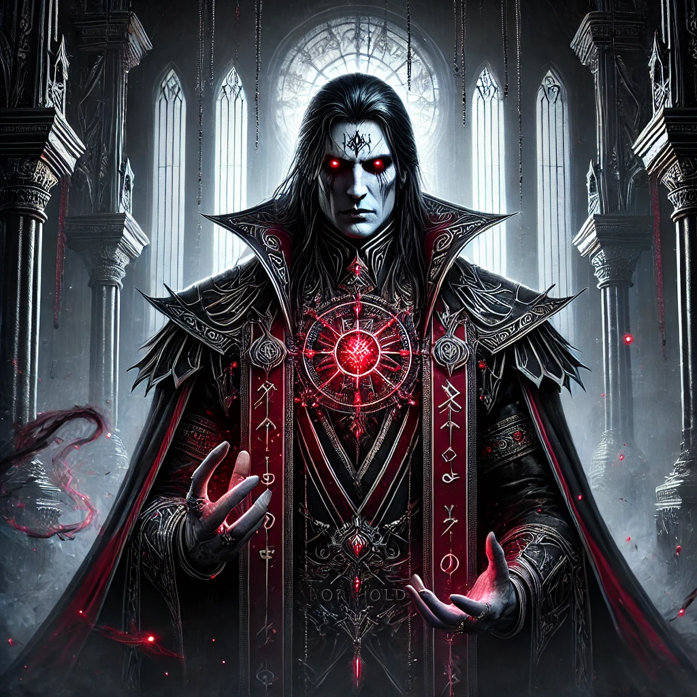

Temná říše Morhold byla vždy řízena silnými jedinci, jejichž osudy formovaly nejen podobu říše, ale i samotnou podstatu temné magie, která ji prostupuje. Od vládců a kněží až po vyhnance a revolucionáře, každá z těchto postav má svůj významný podíl na současném stavu Morholdu.
Postavení: Nejvyšší arcimág a vládce Morholdu, hlava Koncilu Stínů.
Schopnosti: Mistr temné magie, specializuje se na rituální nekromancii a propojení se Stínem.
Charakter: Chladnokrevný, výjimečně inteligentní a neústupný ve svém poslání udržet říši a její pakt při životě.
Arcimág Vorthal je považován za nejschopnějšího mága své doby. Jeho znalosti Stínové magie daleko přesahují jakéhokoliv jeho předchůdce, což mu umožňuje udržet nadvládu Koncilu Stínů nad celou říší. Přestože v jeho žilách koluje magie nesmírné síly, šušká se, že i on se obává neodvratného dne, kdy si Stín přijde vybrat svůj dluh.
Postavení: Bývalá členka Koncilu Stínů, nyní vyhnankyně.
Schopnosti: Mistryně rituální magie a stínových iluzí, schopná skrytě ovládat Stín, aniž by mu podléhala.
Charakter: Odvážná, inteligentní, ale zároveň plná pochybností o svém osudu.
Sylara byla kdysi předurčena k vysokému postavení mezi Stínnými kněžími, avšak její touha odhalit pravdu o původu Paktu ji přivedla ke zradě Koncilu. Když objevila prastaré svitky popisující skutečnou povahu Stínu, byla označena za kacířku a musela uprchnout. Nyní bloudí po temných koutech Morholdu a hledá způsob, jak zlomit pouto říše se Stínem.
Postavení: Hlavní kněz Kultu Stínového Paktu.
Schopnosti: Ovládání Stínové magie na úrovni, která mu umožňuje rozmlouvat se samotnými entitami temnoty.
Charakter: Fanatický, oddaný Stínu, nelítostný k těm, kdo se odkloní od pravé cesty.
Mistr Karzith je jedním z nejnebezpečnějších mužů Morholdu. Jeho víra ve Stínový Pakt je absolutní a je přesvědčen, že den Splátky je ve skutečnosti začátkem nové éry, kdy Morhold dosáhne svého největšího vzestupu. Pod jeho vedením probíhají nejtemnější rituály v Citadele Stínů.
Postavení: Vrchní generál vojsk Morholdu.
Schopnosti: Kombinace temné magie a válečnického umění, dokáže přivolat Stínovou hordu.
Charakter: Chladný stratég, věrný pouze říši a jejímu přežití.
Lord Zhaeron byl kdysi obyčejným válečníkem, který prošel rituály Stínové přeměny, aby se stal dokonalým velitelem. Jeho tělo je napůl smrtelné a napůl spojené s temnotou, což mu umožňuje přežít i ty nejhorší rány. Jeho Stínové legie jsou smrtící silou, která drží říši v bezpečí před vnějšími i vnitřními nepřáteli.
Postavení: Nejvyšší agentka Koncilu Stínů, špiónka a vražedkyně.
Schopnosti: Dokonalá manipulátorka, mistryně černé magie a iluzí.
Charakter: Nepředvídatelná, nebezpečná, ale vždy věrná svému vlastnímu poslání.
Lady Eryss je považována za největší mistryni intrik v dějinách Morholdu. Dokáže manipulovat vůdci cizích zemí, podněcovat vzpoury a bez váhání odstranit kohokoliv, kdo představuje hrozbu pro Koncil Stínů. Její pravá loajalita je však stále záhadou – někteří věří, že se snaží najít způsob, jak se stát silnější než samotný Stín.
Postavení: Strážce zakázaných tajemství Morholdu.
Schopnosti: Ovládání starobylých zaklínadel, neomezený přístup k nejtemnějším svitkům.
Charakter: Osamělý, tajemný, posedlý poznáním.
Xal'Vareth žije v podzemních chrámech Hlubin Paktu, kde se stará o zakázané svitky a prastaré artefakty. O jeho skutečných záměrech se vedou spory – někteří věří, že touží po absolutním vědění, jiní se obávají, že se pokouší přivolat síly, které by mohly Morhold navždy zničit.